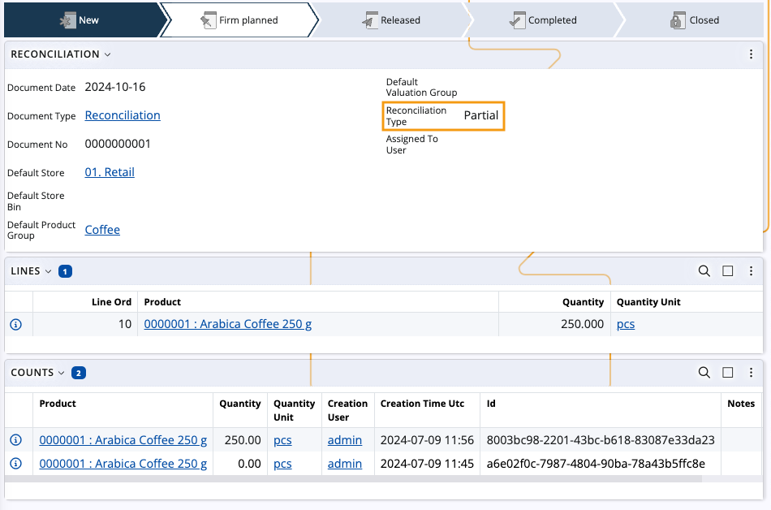
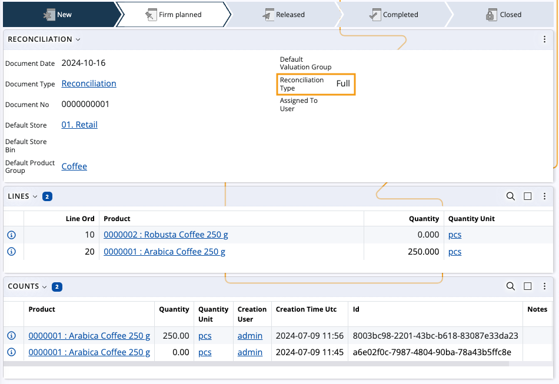
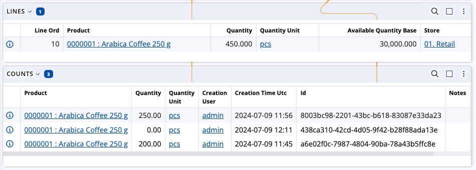
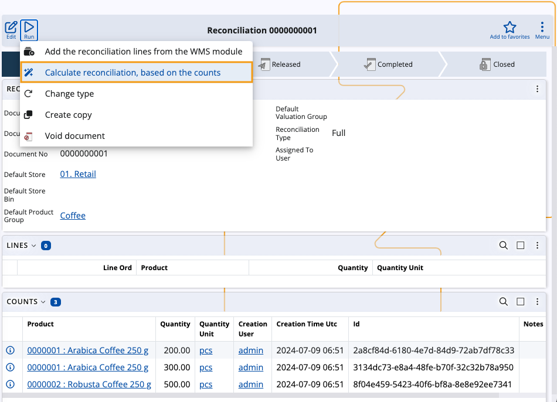
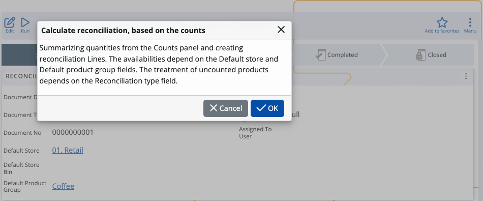
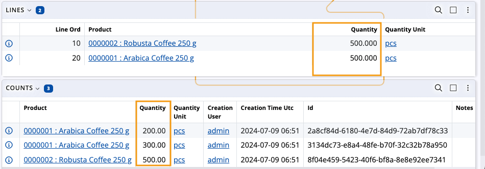

Calculate reconciliation based on the counts
The Calculate reconciliation, based on the counts function takes the rows of product quantities counted in the Counts panel of a reconciliation and summarizes them into lines in the Lines panel.
For instance:
There are six rows of counted quantities of the same product in the Counts panel.
The function is run.
All rows are summarized into a single line in the Lines panel.
Warning
It is not possible to run the function if:
- a Default Store and a Reconciliation Type are not specified for the document
- the document is in a state Released or higher
Lines data
Once product quantities from the Counts panel are summarized into lines, the following information is revealed for each line:
Product - the product whose quantities are counted
Quantity - a sum of the product's counted quantities, grouped by product
QuantityUnit - the measurement unit of the product
AvailableQuantityBase - the current product availability, filtered by Default Store and Default Product Group
Store - the store to which the product belongs.

Behavior based on Reconciliation type
Depending on the Reconciliation type of the document, the function behaves in one of two ways:
Partial
Lines are created for all counted products and filled with the respective lines data.
Products that are not counted don't have lines created for them and their current availability will not be changed.

Full
Lines are created for all counted products and filled with the respective lines data.
Products that are not counted will have lines created for them with quantities set to "0".
If a Default Product Group is assigned, uncounted quantities will be set to "0" only for products from that group.
In that case, counted products from different product groups will not have lines created for them when the function is run.

Note
Products that are counted but are not part of the current store's availability will have lines created for them.
Behavior based on zero counts
Depending on whether zero quantities are present in the Counts panel, the function behaves in one of two ways:
There's at least one counted zero quantity of a product as well as other quantities different from zero.
In this scenario, all quantities of the same product are summed in the Lines panel.

The only counted quantity for one or more products is zero.
In this scenario, each product that has a zero quantity counted will get a line in the Lines panel with quantity set to "0".

Execute the function
Open a reconciliation, click on the Run button and select Calculate reconciliation, based on the counts

You will be asked to confirm the execution of the function. Click OK.

If all conditions are met, new product lines will be created in the Lines panel of the reconciliation.

Important
The function can be run as many times as needed in case additional counts need to be added, edited or deleted.
Each run will result in the removal of all existing Lines and a new calculation for the counts will be started.